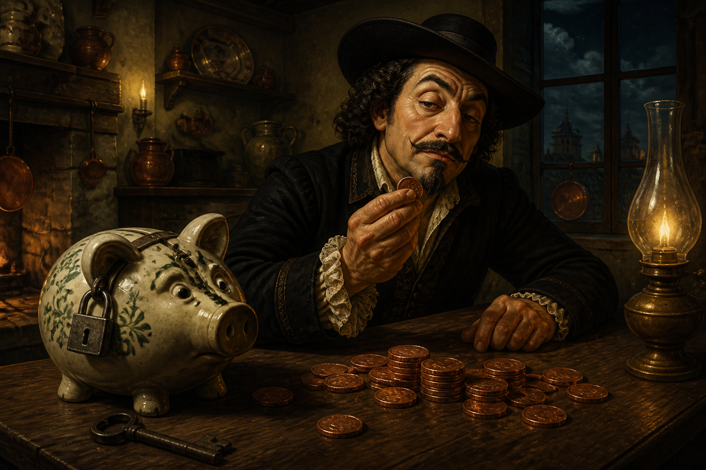
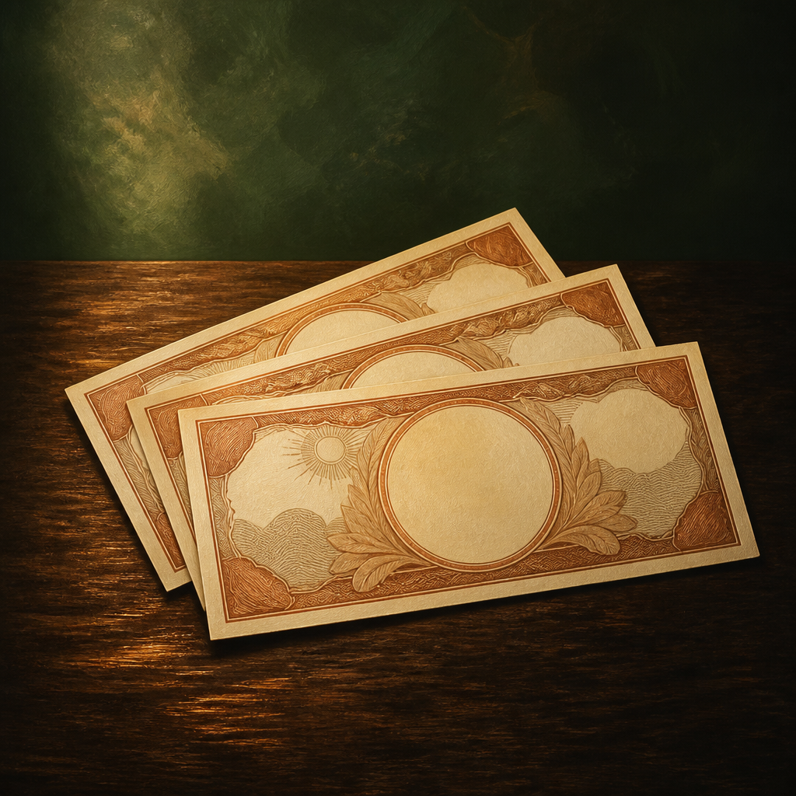

1. Medir antes de moralizar
Mira el recibo de luz, el ticket del súper y las suscripciones. El drama empieza en los números, no en el sermón.

Manual verídico · humor incluido · milagros no
De principiante a “le pongo un ladrillo al váter”. Elige tu nivel y las tácticas se vuelven más locas. Siguen siendo reales. El dentista, el fontanero y tus amigos pueden no aplaudir.
El manifiesto
El tacaño extremo no colecciona cupones por deporte. Pregunta, antes de cada gasto: ¿esto resuelve un problema o solo alivia un aburrimiento?
Mira el recibo de luz, el ticket del súper y las suscripciones. El drama empieza en los números, no en el sermón.
Una cremallera, un sello de nevera o un móvil de tres años bien cuidado ganan a la moda de tirar.
Caminar, cocinar de más y dormir con la calefacción baja son lujos silenciosos. El logo no te calienta la casa.
El comparador oficial de la CNMC ordena las ofertas reales de electricidad en España. No es un anuncio: es el regulador.
Misma herramienta, pestaña de gas natural: mercado libre frente a la TUR. Entra, elige gas y mira qué te está cobrando de más.
Selector de tacañería
Pulsa un nivel. Los billetes se amontonan y las tácticas se ponen más raras. Nadie te obliga a llegar a Extremo. Pero el ladrillo de la cisterna te está guiñando un ojo.

Nivel 1 de 4
Tácticas de este nivel
Consejos que tu madre aprobaría. Todavía puedes hablar de ellos en la cena.
Calculadora de tacaño
Estimación honesta, no promesa de influencer. Mueve los sliders con lo que ya haces —o dejas de hacer.